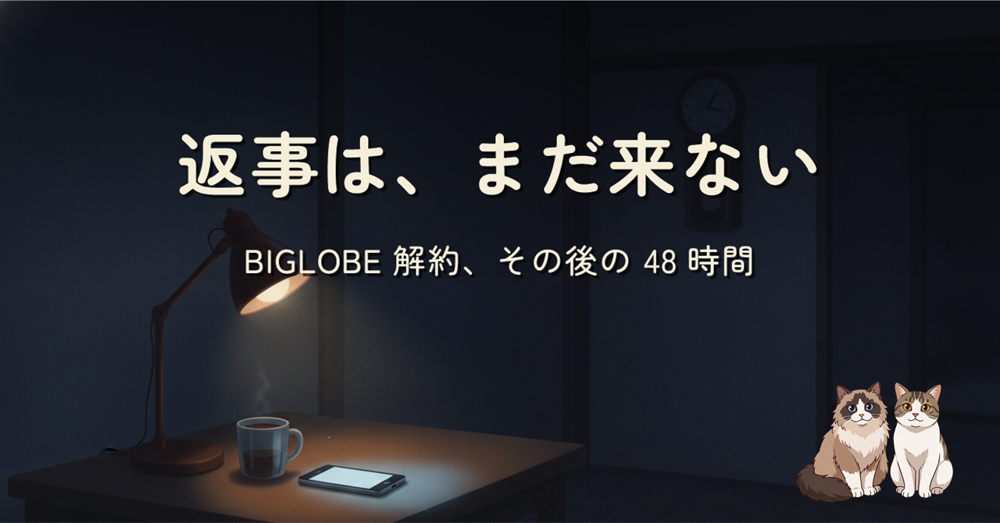
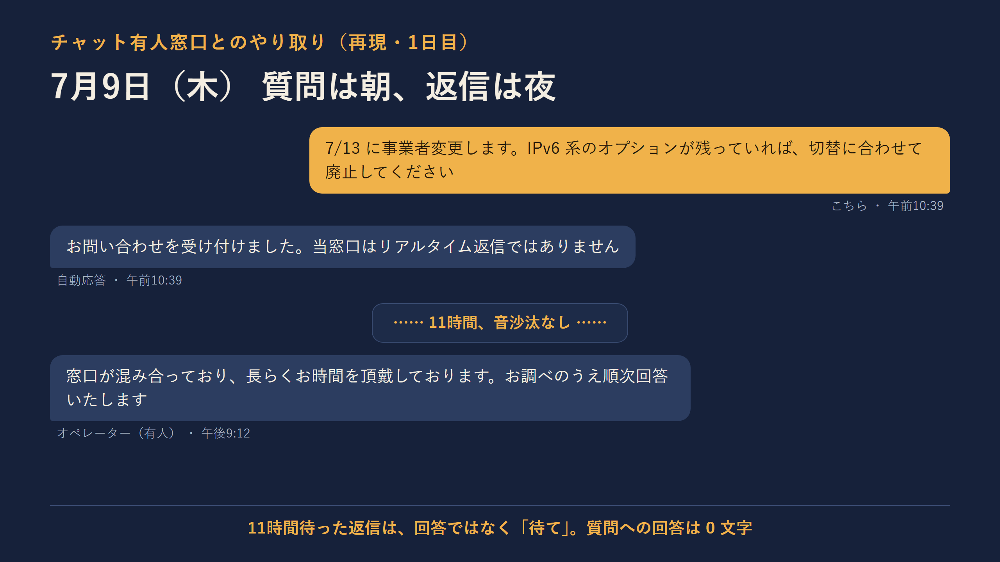
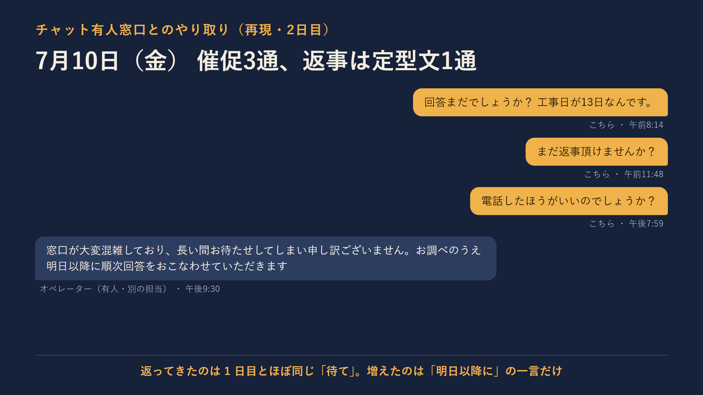
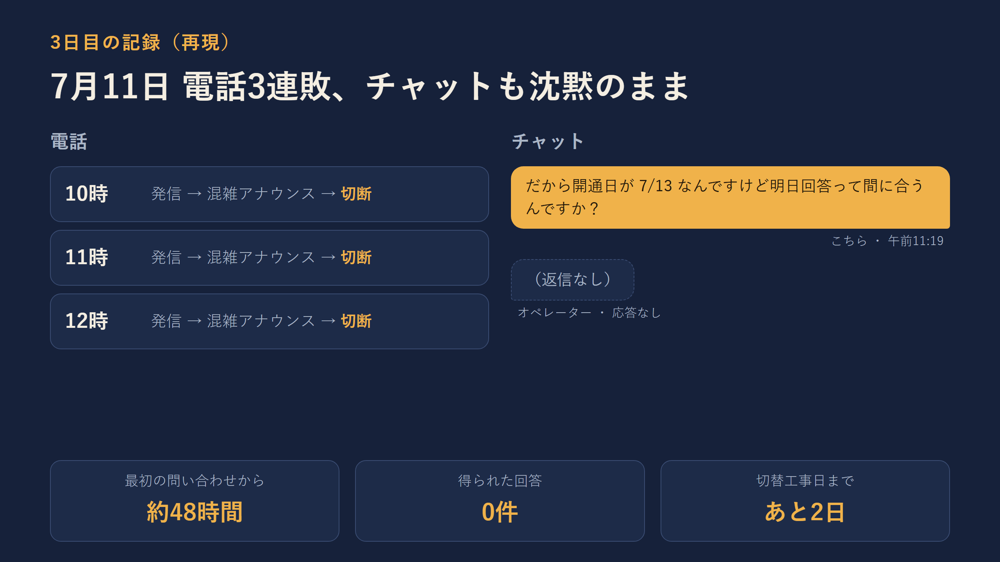

BIGLOBE から他社への事業者変更中。切替工事日の 4 日前に確認したかったのは「IPv6 系オプションが残っていれば切替に合わせて廃止してほしい」の 1 点だけでした。 チャット有人窓口は 2 日たっても回答ゼロ、電話は 3 回とも混雑を理由に切られる。前編「BIGLOBE を解約します」の続編、48 時間の記録です。
質問は契約情報を照会すれば数分で答えられるはずのもの。それでも 1 日目は 11 時間後に「待て」の定型文だけ、2 日目は催促 3 通に「明日以降に順次回答」、3 日目は電話 3 連敗。期限（工事日）を毎回伝えているのに、期限のある問い合わせを拾い上げる仕組みが見当たらない。 前編で書いた「プロバイダ選びで見たいのは有事の顔」の、答え合わせになってしまった話です。


